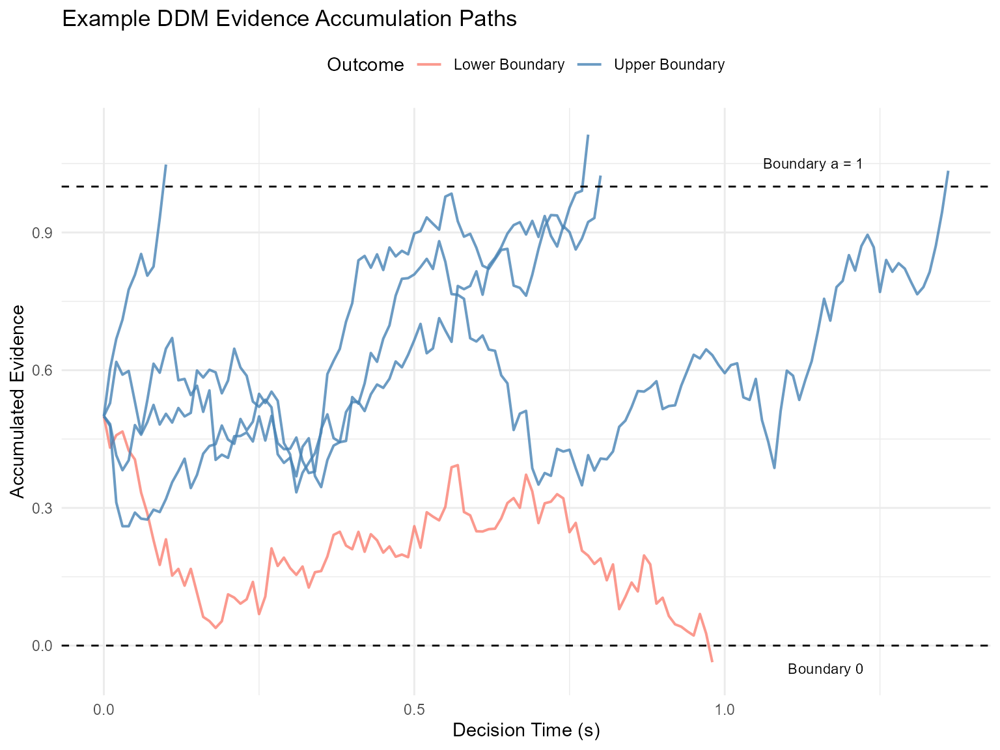
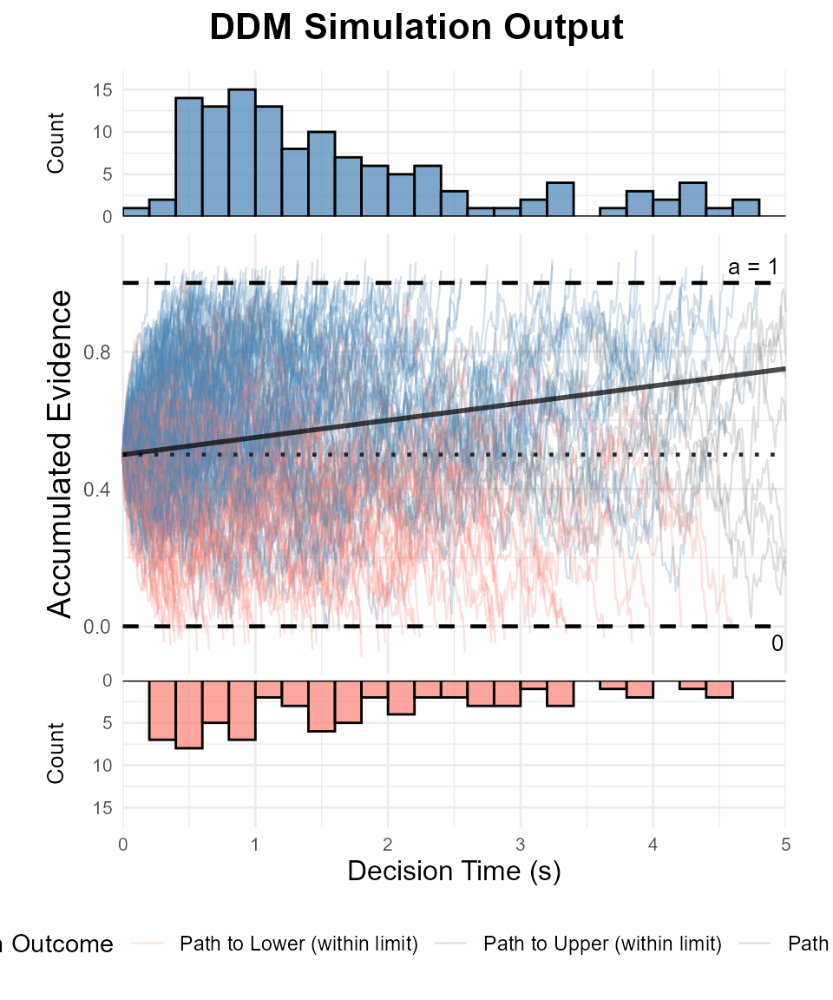

Simulating the Diffusion Decision Model (DDM)
Dogukan Nami Oztas
2025-05-16
02_simulating_diffusion_model.RmdIntroduction to the Diffusion Decision Model (DDM)
The Diffusion Decision Model (DDM) is a prominent mathematical model used in psychology and cognitive neuroscience to account for reaction times (RTs) and accuracy in two-alternative forced-choice (2AFC) decision tasks. It conceptualizes decision-making as a process of noisy evidence accumulation over time towards one of two decision boundaries.
The DDM is essentially a continuous-time version of the random walk model we explored in the previous vignette. Instead of discrete steps, evidence is assumed to accumulate continuously, influenced by both a systematic “drift” (reflecting the quality of stimulus information) and random “noise” (reflecting moment-to-moment variability in processing).
This vignette will demonstrate how to simulate the DDM using the functions created in R/02_diffusion_simulator.R.
Key DDM Parameters
Our DDM simulator, simulate_diffusion_trial(), uses the Feller (1968) convention, where evidence accumulates between a lower boundary at 0 and an upper boundary at a.
-
v (Drift Rate):
The average rate of evidence accumulation.
A positive v indicates drift towards the upper boundary a (often representing the “correct” response for a given stimulus).
A negative v indicates drift towards the lower boundary 0.
The magnitude of v reflects the quality or strength of the stimulus information (e.g., higher discriminability leads to a larger |v|).
-
a (Threshold Separation):
The distance between the lower boundary (0) and the upper boundary (a).
Represents the amount of evidence required to make a decision.
Higher values of a generally lead to slower but more accurate responses (speed-accuracy tradeoff).
-
z (Starting Point):
The initial state of the evidence accumulator, where 0 < z < a.
Represents an initial bias towards one of the responses.
z = a/2 indicates an unbiased starting point.
z > a/2 indicates a bias towards the upper boundary a.
z < a/2 indicates a bias towards the lower boundary 0.
-
s (Noise / Infinitesimal Standard Deviation):
The standard deviation of the normally distributed increments in the evidence accumulation process (scaled by sqrt(dt)).
Represents moment-to-moment variability or noise.
In many DDM applications, s is fixed (often to 0.1) to allow other parameters to be estimated on a common scale.
-
ter (or t0, Non-Decision Time):
The time taken for processes outside of the decision-making stage, such as stimulus encoding and response execution.
It is added to the simulated decision time to yield the total predicted RT.
-
dt (Time Step):
- A small time interval used in the simulation to approximate the continuous diffusion process (Euler-Maruyama method). Smaller dt leads to higher accuracy but longer computation time.
Simulating a Single DDM Trial
The simulate_diffusion_trial() function simulates one instance of the evidence accumulation process.
set.seed(102) # For reproducibility
# Example: Positive drift, unbiased start
trial_A <- simulate_diffusion_trial(v = 0.2, a = 1.0, z = 0.5, s = 0.1, ter = 0.15)
print(paste("Trial A: Choice =", trial_A$choice, "(1=Upper, 0=Lower), RT =", round(trial_A$rt, 3), "s"))## [1] "Trial A: Choice = 1 (1=Upper, 0=Lower), RT = 2.119 s"
# Example: Negative drift, biased towards upper
trial_B <- simulate_diffusion_trial(v = -0.2, a = 1.0, z = 0.7, s = 0.1, ter = 0.15)
print(paste("Trial B: Choice =", trial_B$choice, ", RT =", round(trial_B$rt, 3), "s"))## [1] "Trial B: Choice = 0 , RT = 3.553 s"
# Example: No drift, unbiased start
trial_C <- simulate_diffusion_trial(v = 0.0, a = 1.0, z = 0.5, s = 0.1, ter = 0.15)
print(paste("Trial C: Choice =", trial_C$choice, ", RT =", round(trial_C$rt, 3), "s"))## [1] "Trial C: Choice = NA , RT = NA s"The choice is 1 if the upper boundary a is reached, and 0 if the lower boundary 0 is reached.
Simulating a DDM Experiment
To understand the model’s predictions for RT distributions and choice probabilities, we simulate many trials using simulate_diffusion_experiment().
Let’s simulate an experiment with parameters that should yield a mix of choices and a right-skewed RT distribution.
set.seed(202)
n_sim_trials <- 2000 # Use a good number of trials for smooth distributions
# Define a set of parameters
params <- list(
v = 0.15, # Moderate positive drift
a = 1.2, # Threshold
z = 0.6, # Unbiased start (a/2)
s = 0.5, # Standard noise
ter = 0.2, # Non-decision time
dt = 0.01 # Time step
)
ddm_data <- simulate_diffusion_experiment(
n_trials = n_sim_trials,
v = params$v,
a = params$a,
z = params$z,
s = params$s,
ter = params$ter,
dt = params$dt
)
# Display the first few rows
knitr::kable(head(ddm_data), caption = "First 6 trials of the simulated DDM experiment.")| trial | choice | rt | decision_time |
|---|---|---|---|
| 1 | 1 | 0.74 | 0.54 |
| 2 | 1 | 1.69 | 1.49 |
| 3 | 0 | 3.21 | 3.01 |
| 4 | 0 | 0.88 | 0.68 |
| 5 | 1 | 1.25 | 1.05 |
| 6 | 0 | 0.93 | 0.73 |
# Summary of the data
summary(ddm_data)## trial choice rt decision_time
## Min. : 1.0 Min. :0.0000 Min. :0.310 Min. :0.110
## 1st Qu.: 500.8 1st Qu.:0.0000 1st Qu.:0.820 1st Qu.:0.620
## Median :1000.5 Median :1.0000 Median :1.310 Median :1.110
## Mean :1000.5 Mean :0.6779 Mean :1.607 Mean :1.407
## 3rd Qu.:1500.2 3rd Qu.:1.0000 3rd Qu.:2.080 3rd Qu.:1.880
## Max. :2000.0 Max. :1.0000 Max. :5.100 Max. :4.900
## NA's :47 NA's :47 NA's :47Analyzing DDM Experiment Results
1. Choice Proportions
# Filter out NA choices (if max_decision_time was hit)
valid_ddm_choices <- na.omit(ddm_data$choice)
choice_counts_ddm <- table(valid_ddm_choices)
choice_proportions_ddm <- prop.table(choice_counts_ddm)
print("DDM Choice Counts:")## [1] "DDM Choice Counts:"
print(choice_counts_ddm)## valid_ddm_choices
## 0 1
## 629 1324
print("DDM Choice Proportions:")## [1] "DDM Choice Proportions:"
knitr::kable(as.data.frame(choice_proportions_ddm), col.names = c("Choice", "Proportion"), caption = "DDM Choice Proportions")| Choice | Proportion |
|---|---|
| 0 | 0.3220686 |
| 1 | 0.6779314 |
barplot(choice_proportions_ddm,
main = "DDM Choice Proportions",
xlab = "Choice (1 = Upper, 0 = Lower)",
ylab = "Proportion",
names.arg = c("Lower Boundary (0)", "Upper Boundary (1)"), # More descriptive labels
col = c("salmon", "lightblue"))
With a positive drift (v = 0.15), we expect more choices for the upper boundary (Choice 1).
2. Reaction Time (RT) Distributions
The DDM is well-known for predicting positively skewed RT distributions.
# Filter out NA RTs
valid_ddm_rt_data <- ddm_data %>% filter(!is.na(rt))
if(nrow(valid_ddm_rt_data) > 0) {
# Plot for decision_time only
p_rt_decision <- ggplot(valid_ddm_rt_data, aes(x = decision_time, fill = factor(choice))) +
geom_histogram(binwidth = 0.025, alpha = 0.8, position = "identity", color="black") +
facet_wrap(~factor(choice, labels = c("Lower Boundary (0)", "Upper Boundary (1)"))) +
labs(
title = "DDM Decision Time Distributions",
x = "Decision Time (s)",
y = "Frequency",
fill = "Choice"
) +
theme_minimal()
print(p_rt_decision)
# Summary statistics for RTs
rt_summary_ddm <- valid_ddm_rt_data %>%
group_by(choice) %>%
summarise(
Mean_RT = mean(rt),
Median_RT = median(rt),
SD_RT = sd(rt),
Min_RT = min(rt),
Max_RT = max(rt),
N = n()
) %>% ungroup() # Ungroup for kable
knitr::kable(rt_summary_ddm, caption = "Summary Statistics for DDM RTs by Choice")
# Check for skew: Mean > Median
print("Mean RTs:")
print(rt_summary_ddm$Mean_RT)
print("Median RTs:")
print(rt_summary_ddm$Median_RT)
} else {
print("No valid trials with RTs to plot (all may have hit max_decision_time).")
}
## [1] "Mean RTs:"
## [1] 1.589921 1.615491
## [1] "Median RTs:"
## [1] 1.31 1.31We should observe the characteristic right-skew (positive skew) in these distributions, where the mean RT is typically greater than the median RT. The decision time plot helps isolate the skew predicted by the accumulation process itself, separate from the non-decision time.
Visualizing Evidence Accumulation Paths (Optional Advanced)
To gain a more intuitive understanding of the DDM, it’s helpful to visualize the actual paths of evidence accumulation on a few example trials. This is similar to Figure 1 in “An Introduction to the Diffusion Model of Decision-Making” by Smith and Ratcliff.
We’ve created a modified function, `simulate_diffusion_trial_with_path()`, which, in addition to the choice and RT, also returns the history of evidence levels over time for a single trial.
Let’s simulate a few trials and plot their paths. We’ll aim for a scenario that can produce varied outcomes.
path_params <- list(
v = 0.1, # A moderate drift, so paths aren't too quick
a = 1.0, # Threshold
z = 0.5, # Unbiased start
s = 0.5, # A bit more noise to make paths interesting
dt = 0.01,
ter = 0.1 # ter is not directly used in path plotting but good for context
)
n_paths_to_plot <- 5 # Number of example paths
all_paths_data <- vector("list", n_paths_to_plot) # To store data for each path
set.seed(343) # For reproducibility of these specific paths
for (i in 1:n_paths_to_plot) {
trial_with_path <- simulate_diffusion_trial_with_path(
v = path_params$v,
a = path_params$a,
z = path_params$z,
s = path_params$s,
dt = path_params$dt,
ter = path_params$ter
)
# Add a trial identifier to the path data
trial_with_path$path_data$trial_id <- paste("Trial", i)
trial_with_path$path_data$final_choice <- trial_with_path$choice # Store choice for coloring
all_paths_data[[i]] <- trial_with_path$path_data
}
# Combine all path data into a single data frame for ggplot
plot_df_paths <- bind_rows(all_paths_data)
# Get the threshold 'a' (assuming it's the same for all these trials)
threshold_a <- path_params$aNow we can plot these paths using ggplot2.
if(nrow(plot_df_paths) > 0) {
ggplot(plot_df_paths, aes(x = time_s, y = evidence, group = trial_id, color = factor(final_choice))) +
geom_line(alpha = 0.8, linewidth = 0.7) +
geom_hline(yintercept = 0, linetype = "dashed", color = "black") +
geom_hline(yintercept = threshold_a, linetype = "dashed", color = "black") +
annotate("text", x = max(plot_df_paths$time_s, na.rm = TRUE) * 0.9, y = threshold_a + 0.05, label = paste("Boundary a =", threshold_a), hjust = 1, size=3) +
annotate("text", x = max(plot_df_paths$time_s, na.rm = TRUE) * 0.9, y = -0.05, label = "Boundary 0", hjust = 1, size=3) +
scale_color_manual(values = c("0" = "salmon", "1" = "steelblue", "NA" = "grey"),
labels = c("0" = "Lower Boundary", "1" = "Upper Boundary", "NA"= "Timeout"),
name = "Outcome") +
labs(
title = "Example DDM Evidence Accumulation Paths",
x = "Decision Time (s)",
y = "Accumulated Evidence"
) +
theme_minimal() +
theme(legend.position = "top")
} else {
print("No path data to plot.")
}
# Display the first few rows of the combined path data
knitr::kable(head(plot_df_paths), caption = "Sample of combined path data for plotting.")| time_s | evidence | trial_id | final_choice |
|---|---|---|---|
| 0.00 | 0.5000000 | Trial 1 | 0 |
| 0.01 | 0.4311612 | Trial 1 | 0 |
| 0.02 | 0.4583268 | Trial 1 | 0 |
| 0.03 | 0.4664400 | Trial 1 | 0 |
| 0.04 | 0.4251076 | Trial 1 | 0 |
| 0.05 | 0.4055165 | Trial 1 | 0 |
Visualizing Evidence Accumulation Paths with Helper Function
To better visualize the DDM process, we’ll use our custom helper function `plot_ddm_paths_with_histograms()`. This function will display several trial paths, decision boundaries, the starting point, and the average drift line. It will also generate separate plots for the RT distributions at each boundary.
# Parameters for path visualization
path_plot_params_int <- list(
v = 0.05, # Moderate positive drift
a = 1,
z = 0.5, # Unbiased
s = 0.4, # More noise
ter = 0.0, # For ridges, we're plotting decision_time so ter=0 in sim is cleaner
dt = 0.01
)
n_example_paths_int <- 200 # Need more trials for decent ridges
# Simulate the trials
set.seed(505)
example_trials_list_int <- vector("list", n_example_paths_int)
for (i in 1:n_example_paths_int) {
example_trials_list_int[[i]] <- simulate_diffusion_trial_with_path(
v = path_plot_params_int$v,
a = path_plot_params_int$a,
z = path_plot_params_int$z,
s = path_plot_params_int$s,
dt = path_plot_params_int$dt,
ter = path_plot_params_int$ter # Using ter=0 from params for this plot
)
}
if(length(example_trials_list_int) > 20){ # Check if enough valid trials for hists
plot_ddm_paths_with_histograms(
trials_data_list = example_trials_list_int,
v_drift = path_plot_params_int$v,
z_start = path_plot_params_int$z,
a_threshold = path_plot_params_int$a,
hist_binwidth = 0.2, # Adjust as needed
max_time_to_plot = 5
)
} else {
print("Not enough valid trials with diverse outcomes to generate combined plot.")
}
Conclusion
This vignette demonstrated the simulation of the Diffusion Decision Model using our R functions. We explored the key parameters and observed how they influence choice probabilities and the shape of RT distributions. The DDM provides a powerful framework for understanding the time course of simple decisions.
Further explorations could involve:
Systematically varying each DDM parameter to observe its impact (next vignette).
Implementing across-trial variability in parameters (e.g., sv, sz, st0).
Comparing simulated data to empirical data.